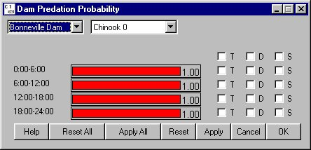

There are three ways to edit the value of an individual slider.
All changes made to slider values need to be applied by clicking Apply / Apply All / OK before the values will take effect.
Slider Input window and Slider Value dialog box
Some Slider Input windows contain a tab list (variable list is longer than ten items), click on a letter tab to access a portion of the list and edit the desired slider as directed above. Some Slider Input windows contain Mean, Low, and High value sliders which are separate entities and are edited separately.
There are several Slider Input windows which involve setting time-specific, dam-specific and species-specific values for each slider, and there is one Slider Input window which involves setting reach-specific and species-specific values.
Parameter values can be set individually for each species at each dam by selecting the desired species from the species menu, selecting the desired dam from the dam menu, and then following the directions above. If you make multiple changes to dam and species parameter settings, click Apply All to save all the changes made. Parameters can be grouped across Time (T), Dam (D) or Reach (R), and Species (S) by selecting the appropriate check boxes to the right of the slider. See the Edit Multiple Slider Values Simultaneously and Edit All Slider Values Simultaneously sections for directions.

Dam Predation Probability window.